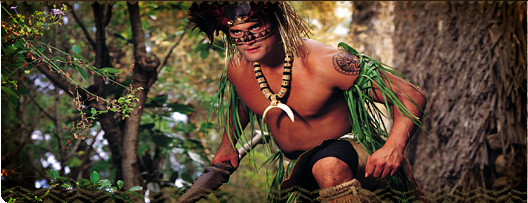

首页>村落介绍>纽西兰群岛
纽西兰群岛克爱欧阿 (Kia Ora﹗) 意即为欢迎来到玻里尼西亚文化中心的纽西兰群岛（奥特爱瑞阿群岛)。 在过去的一千多年以来纽西兰的毛利人，都是以“被白云笼罩着的土地”来形容自己的家乡。 位于玻里尼西亚大三角地区西南方的纽西兰，是玻里尼西亚人中唯一可以感受到四季变化的岛屿。 由于此一特点；使得纽西兰毛利族比其他位于热带地区的玻里尼西亚民族，更能创造出独特的建筑型态及生活模式。 在中心的纽西兰村落，除了历史闻名可容纳40名勇士的独木舟战船展示之外，另有守望塔及贩卖纪念品与零食的木小屋。 纽西兰村活动介绍每日下午表演时间： 1：00、3︰30 及4︰30pm 在纽西兰村落中村民会议室墙上的精美雕刻，叙述毛利人古老而神奇的传说。 所有美丽的雕刻及面部纹身均富含深远的文化意义。 在传统舞蹈中吐舌及舞动 poi 球的精湛演出， 且能表达他们与众不同的沟通模式。在这里， 激励人心的哈卡 (haka) 战舞是千万不能错过的， 而孩子们最喜爱纽西兰传统的树枝游戏，来考验手眼并用的协调能力； 此外还有最受欢迎的暂时性纹身，它各种美丽、精致的图案使人不忍擦拭。 纽西兰的传统建筑纽西兰村落建筑的特征，是由主要几种不同功能的房舍围成圆形的广场。 穿过传统雕刻的图腾大门，在广大的圆形广场四周，最显著的就是村落会议室，它是居民生活的重心，举凡村落中大小及重要集会皆在这里举行。其次；则是有着精美雕刻的酋长及家人住所，其中有储存粮食的仓库等等，生活机能一应俱全。 |